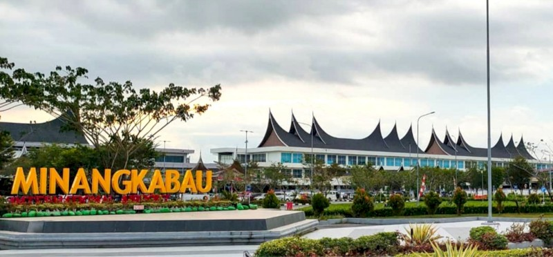

Transportasi Darat
Stasiun Kereta Api Pasar Alai
Stasiun ini merupakan salah satu stasiun utama yang melayani perjalanan kereta api di Kota Padang.
Beli TiketStasiun Kereta Api Tabing
Stasiun ini melayani rute-rute lokal dan mendukung aktivitas transportasi darat di kawasan Padang.
Beli TiketTransportasi Laut
Pelabuhan Muaro
Pelabuhan ini melayani aktivitas nelayan dan perdagangan lokal di Kota Padang.
Beli TiketPelabuhan Teluk Bayur
Sebagai pelabuhan internasional, Teluk Bayur memiliki peran penting dalam ekspor-impor.
Beli TiketTransportasi Udara
Bandara Sutan Sjahrir
Bandara ini melayani rute domestik dan internasional sebagai pusat transportasi udara di Padang.
Beli Tiket

Bandara Internasional Minangkabau
Bandara ini melayani rute domestik dan internasional sebagai pusat transportasi udara di Padang.
Beli Tiket